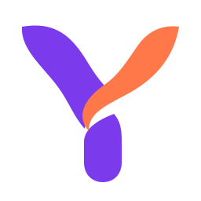
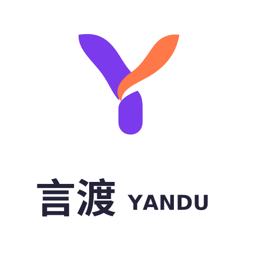
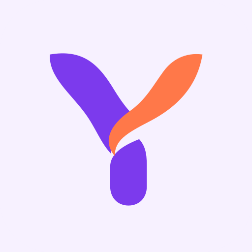
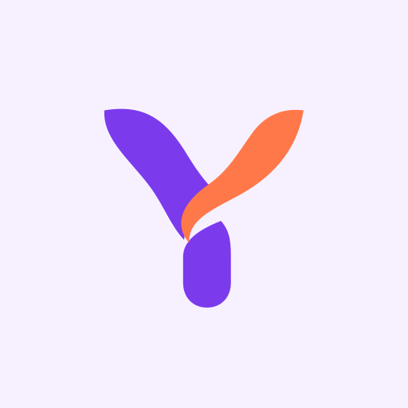
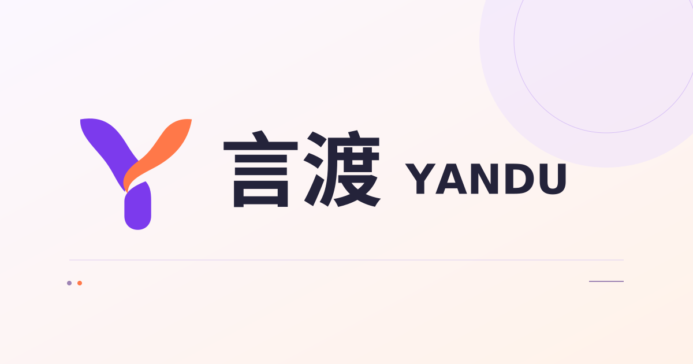
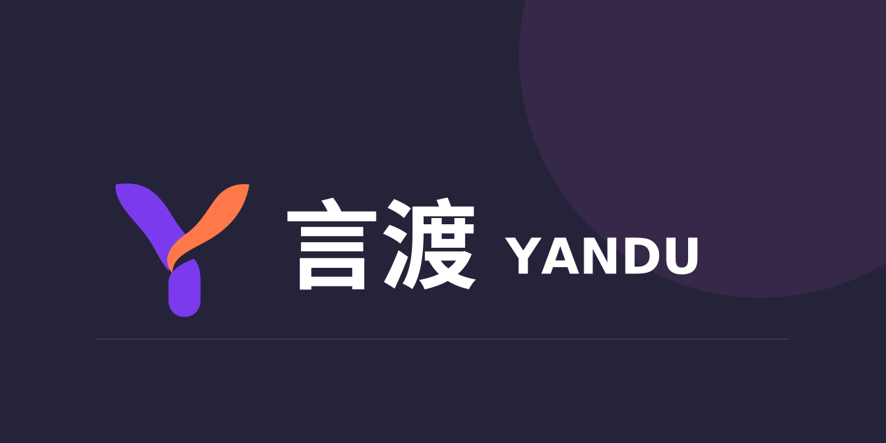

让每一种语言，准确抵达。
流动 Y · 品牌资产
依据已确认的紫橙方向重建。SVG 为路径母版，文字已转曲；全部文件直接保存在仓库中。原对话图片尚未核对，此页展示当前统一使用的矢量版本。












让每一种语言，准确抵达。
依据已确认的紫橙方向重建。SVG 为路径母版，文字已转曲；全部文件直接保存在仓库中。原对话图片尚未核对，此页展示当前统一使用的矢量版本。





